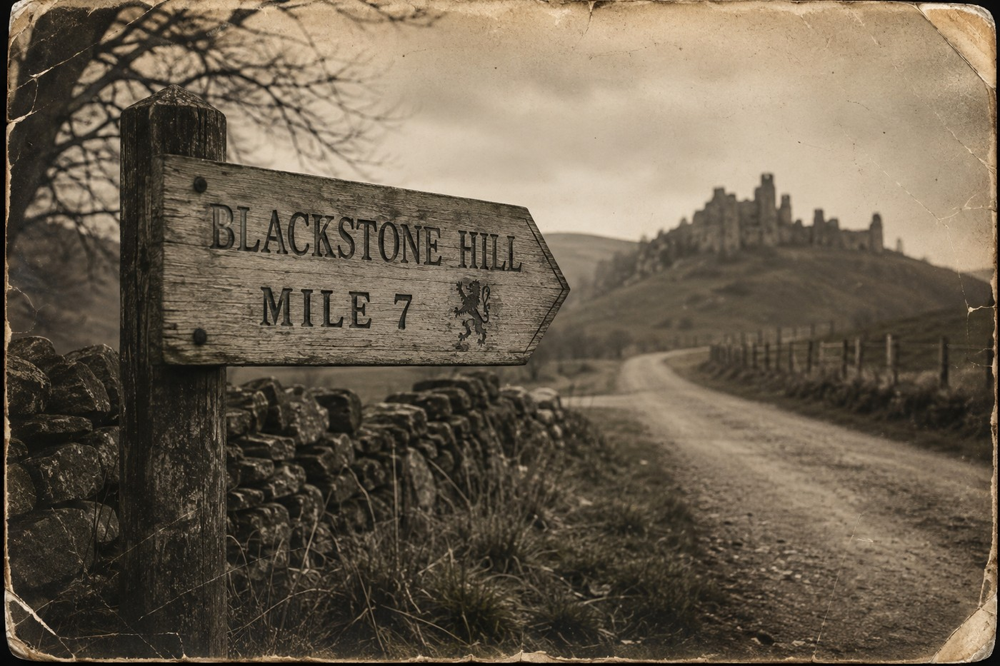

A minor route along the eastern boundary, closed to public travel since 1998.
| Established | 1847 |
|---|---|
| Original route | Eastern Gate → Old Road |
| Current status | Closed by royal order, 1998 |
Survey filings on record:
| 1996 | Thomas Reed — route condition satisfactory |
|---|---|
| 1997 | Marcus Bell — minor washout near mile 4, repaired |
| 1998 | Elias Vale — filing incomplete, no closing report |
A single photograph was attached to the 1998 filing before it was pulled from circulation. It appears to have been taken along the route itself, though the register gives no further caption.

Route records beyond this point were sealed along with the road itself. The register notes only that the road "was never formally decommissioned past its final marker."